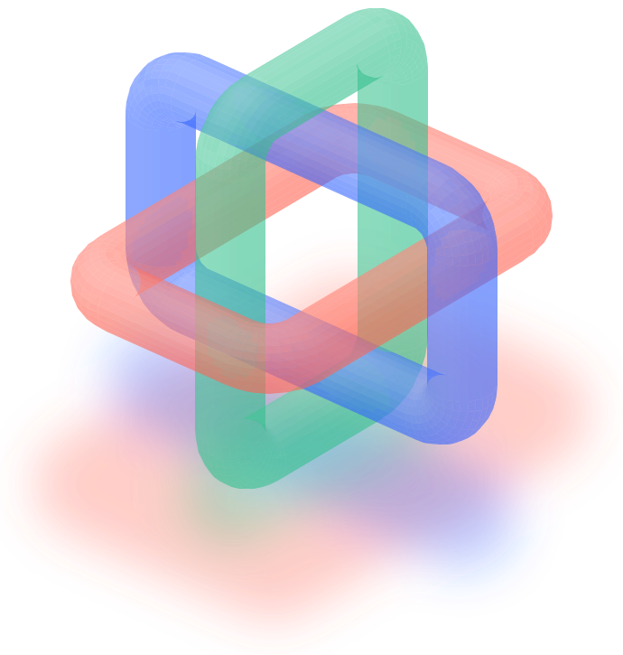

Why compression ratio moves the scaling ceiling¶
On a ten-core processor, the same parallel bzip2 decoder scales to nine threads on structured dumps yet peaks at five on ordinary source code and text.

Benchmark a parallel bzip2 decoder on a ten-core processor with a 210 MB Wikidata dump. Adding threads keeps paying off all the way to nine workers. Now hand that same binary a compressed archive of Rust source code or JSON. It stops speeding up at four or five workers. Give it eight or ten workers and it actually runs slower.
The reason has nothing to do with thread scheduling or the tool that compressed the file. It is built into bzip2 itself. Every block passes through two stations in sequence (the decoder as a queueing network). One serial front stage decodes Huffman symbols. A pool of parallel workers then inverts the Burrows–Wheeler transform (BWT) to recover the original bytes. The serial stage pays per Huffman symbol. The parallel workers pay per output byte. Compression ratio sets the exchange rate between those two currencies.
Alongside these hardware measurements, three default-path improvements have shipped in mibz2 0.5.15 and 0.5.16. They bring a faster Huffman scanner, wider branchless run decoding and chunked whole-file reads in Python. Together they show why the same speed-up can stay hidden on one benchmark yet pay off cleanly on another.
Takeaways
- The scaling knee moves with the input. On a ten-core Intel Core i9-10900K, Wikidata keeps scaling to nine workers. Ordinary source code and JSON peak at four or five workers.
- Symbol density drives the shift. Scanner time per Huffman symbol barely varies across text corpora (1.41 to 1.48 ns). Ordinary text simply packs three to five times more symbols into each output megabyte than a repetitive dump does.
- Extra threads hurt past the knee. Once the serial scanner saturates on Rust source or JSON, adding workers past six slows decoding down. Moving from five workers to ten costs roughly twice as much total processor time.
- Faster scanning hides until the scanner binds. The new Huffman scanner in 0.5.15 cut serial scan time on Wikidata by 10.5% and ten-thread time by 4.0%. Four-thread and eight-thread Wikidata timings barely moved because workers still set the pace there.
- Two more default improvements landed in 0.5.16. Raising the run-decoding ceiling from 50% to 75% speeds up compressible Markdown, ELF binaries and JSON. Whole-file Python reads now pull 1 MiB chunks directly without changing wheel compatibility.
1. Two stations, two currencies¶
In a block-parallel bzip2 decoder, one thread must scan the compressed bit stream in order. bzip2 blocks are not byte-aligned and carry no index of their boundaries. That thread reads each block's headers, selector list and Huffman-coded symbols. It then hands the decoded symbols to whichever worker is free. The workers run move-to-front decoding, BWT inversion, run-length expansion and CRC verification in parallel.
Ignore startup and teardown for a moment. Suppose scanning a block takes time \(S\) and worker processing takes time \(W\). Then \(k\) workers keep pace with the scanner when \(W / k = S\). That gives a natural balance point:
Here \(s_{\text{sym}}\) is the scanner's cost per Huffman symbol and \(w_{\text{byte}}\) is the worker's cost per output byte. The factor \(\rho\) is the number of Huffman symbols per output byte. Repetitive data compresses tightly because move-to-front and zero-run encoding collapse long runs into very few symbols. That makes \(\rho\) small. Higher-entropy text leaves far more non-zero symbols behind, pushing \(\rho\) up.
We measured \(S\) and \(W\) directly on one pinned core of an Intel Core i9-10900K. Two controlled runs covered seven corpora in all. The first tested Wikidata beside three repository corpora: Rust source, JSON and Markdown. The second tested Wikidata beside mixed prose and code, random bytes and fixed-width records.
| corpus | compression ratio | symbols / output byte | scanner, ns / sym | worker, ns / byte | balance \(k^*\) |
|---|---|---|---|---|---|
| Wikidata dump | 17.7× | 0.119 | 1.41 | 1.60 | 9.55 |
| mixed prose and code | 6.5× | 0.339 | 1.48 | 2.56 | 5.09 |
| JSON | 4.9× | 0.432 | 1.43 | 2.59 | 4.19 |
| Rust source | 5.2× | 0.419 | 1.48 | 2.58 | 4.16 |
| random bytes | 1.1× | 1.000 | 2.00 | 7.79 | 3.90 |
| fixed records | 1.0× | 1.000 | 2.08 | 7.62 | 3.68 |
| Markdown docs | 3.9× | 0.553 | 1.44 | 2.72 | 3.43 |
Look at the fourth column first. Across every text and structured corpus, the scanner spends almost the same time per Huffman symbol: 1.41 to 1.48 ns. On random bytes and uncompressible records, longer average codewords nudge that cost to 2.00 to 2.08 ns.
What changes dramatically is the third column. Wikidata needs only 0.119 symbols per output byte. Rust source and JSON need 0.419 and 0.432 — more than three and a half times as many. Markdown needs 0.553, nearly five times as many. Worker cost per output byte rises too, because less compressible blocks move to the general-purpose kernel (faster decoding for ordinary text). Yet worker cost rises by only 1.6 to 1.7 times on the text panel, far less than symbol density does. The balance point \(k^*\) therefore drops by more than half.
Workers needed to match the serial scanner on ten-core hardware
A separate eleven-corpus survey on a virtual machine ruled out the encoder as a confound. The Wikidata dump was compressed by lbzip2, while the text corpora were compressed with standard bzip2 at level 9. Re-encoding Wikidata with standard bzip2 left its balance point within 2% of the original dump. The difference comes from the data, not the compressor.
2. Watching the knee move on ten cores¶
Single-thread station balance predicts demand, not real wall time. Cache contention, thread wakeups and memory traffic can shift the true knee. We therefore ran a pre-registered thread sweep on the same Intel Core i9-10900K. It tested four to ten workers over nine interleaved rounds per thread count. Each text corpus was concatenated into a multi-stream file of roughly 183 to 190 MB of output so startup noise stayed small. Wikidata was tested as four concatenated copies totalling 839 MB.
The frozen criterion defined a corpus's scaling knee as the smallest worker count within 2% of its best nine-round median elapsed time.
| corpus | balance \(k^*\) | 4 workers, ms | 5 workers, ms | 6 workers, ms | 8 workers, ms | 9 workers, ms | 10 workers, ms | median knee | fastest-round knee |
|---|---|---|---|---|---|---|---|---|---|
| Wikidata (839 MB) | 9.55 | 473.9 | 403.8 | 358.1 | 300.7 | 269.6 | 288.5 | 9 | 9 |
| Rust source (183 MB) | 4.16 | 207.2 | 202.9 | 203.2 | 256.5 | 256.2 | 263.9 | 5 | 5 |
| JSON (190 MB) | 4.19 | 218.5 | 217.5 | 221.5 | 259.4 | 270.1 | 257.4 | 4 | 4 |
| Markdown (184 MB) | 3.43 | 296.6 | 298.8 | 303.8 | 203.9 | 253.8 | 240.3 | 8 | 4 |
The pre-registered hypothesis passed cleanly. The text panel's median scaling knee was five workers, while Wikidata's knee was nine. On Rust source and JSON, adding workers past six did not merely flatten out. It made decoding measurably slower. Moving from five workers to ten pushed median time up 30% on Rust source and 18% on JSON. Total processor time roughly doubled as extra threads contended for shared L3 cache and queue locks.
Markdown looks like an outlier in the median column. It landed at eight workers even though its single-thread balance point is the lowest at 3.43. The per-round timings explain why. The workstation ran under Linux's powersave governor, idling at 800 MHz between runs. Individual 200 ms bursts therefore split cleanly into two speed clusters depending on turbo ramp-up. Full-clock runs at 4.9 GHz took about 190 to 200 ms, while slower-ramp runs took 260 to 305 ms. On Markdown, four of nine rounds stayed fast at four and five workers, versus five of nine at eight workers. That single round flipped which side of the gap the median landed on.
Normalised decode time from four to ten workers on ten-core hardware
The right-hand panel isolates full-clock runs by taking the fastest of the nine rounds at each worker count. Every single corpus then lines up with its single-thread station balance. Wikidata drops smoothly from 355.5 ms at four workers to 183.2 ms at nine, reaching 4.58 GB/s before ticking up at ten. Rust source hits its floor at five workers (167.4 ms, 1.09 GB/s). JSON sits flat from four to six workers (184.6 ms, 1.03 GB/s) before climbing. Markdown is already at its fastest at four workers (187.5 ms, 0.98 GB/s) and drifts gently upward from there.
3. Why a faster scanner disappears on Wikidata at eight threads¶
Once you know where the balance point sits, a puzzle from mibz2 0.5.15 makes immediate sense.
Version 0.5.15 shipped a redesigned Huffman scanner in the default decoder. Normally a bzip2 decoder switches Huffman tables every 50 symbols. The new scanner coalesces consecutive groups that reuse the same table into one run. It also packs the primary lookup table into a compact byte-aligned layout and skips redundant zero-initialisation of scratch arrays. Finally, it dispatches BMI2 bit-shift instructions once per block rather than checking inside the hot loop.
On the ten-core workstation, isolated phase timings confirmed a clean 10.5% cut in serial scanning time. Across four copies of Wikidata, scanning fell from 160 ms to 143 ms with non-overlapping ranges over ten paired rounds. In a construction-free test where workers are artificially fast, that scanner win translated directly into 7.8% faster eight-thread decoding and 5.8% faster ten-thread decoding.
Yet in the real decoder on the very same machine, the wall-clock picture was much subtler:
- On four copies of Wikidata, eight-thread decoding sped up by 1.9% and ten-thread decoding by 4.0%. Thirty guard measurements across six other corpora showed zero regressions.
- On the single-copy Wikidata release check comparing 0.5.15 against 0.5.14, single-thread decoding ran 5.7% faster and two-thread decoding 3.4% faster. Elapsed time at four, eight and ten threads stayed flat within 0.4%. At twelve unpinned threads a 9.5% gain re-emerged.
Nothing went wrong with the scanner. On Wikidata, \(k^*\) is about 9.5. At four or eight threads, the workers still take longer than the serial scanner. Shaving 10.5% off the scanner therefore just gives that thread more idle margin while it waits for the admission window. At one and two threads, every saved microsecond comes straight off the active core's total work. At ten threads, workers finally catch up to the scanner and the speed-up shows through again. On ordinary text, where \(k^*\) is four to five, the scanner already limits throughput well before eight cores.
4. Two more shipped improvements in 0.5.16¶
Two further default-path improvements shipped in mibz2 0.5.16. Both target real workloads that a Wikidata-only benchmark never exercises.
Wider branchless run decoding. When a bzip2 block compresses well, its decoded symbol stream consists largely of run-length tokens rather than dense literal bytes. mibz2's branchless run front previously accepted a block only up to 50% of the block length bound. A census across fourteen corpora found forty compressible blocks sitting just above that line, between 50% and 75% of the bound. Those blocks came from Markdown, ELF executables, JSON, prose and Python source, and still held 17% to 49% run symbols.
Version 0.5.16 raises the admission ceiling to 75% of the bound. In the newly widened band, a block must also carry at least 12.5% run symbols. That guard keeps short, small-alphabet random streams (near 3.8% runs) on the column path where they belong. Isolated virtual-machine benchmarks across three compiler profiles measured clear cuts in move-to-front and inverse-BWT processor time. Markdown ran 13.2% to 32.4% faster, ELF binaries 14.5% to 24.7% faster and JSON 9.0% to 9.9% faster. Not a single Wikidata, random, records or pattern block changed route. On the ten-core workstation's 0.5.16 release check, Wikidata elapsed times stayed flat from one to twenty threads, matching the prediction.
Chunked whole-file reads in Python. Profiling the Python bindings turned up an unexpected cost
on the classic mibz2.open(path).read() path. Because BZ2Reader inherited RawIOBase.readall(),
a whole-file read looped through readinto() in 8 KiB pieces. Reading one 210 MB file took 25,829
calls across the Python–Rust boundary.
Version 0.5.16 overrides whole-file readall() and read() in BZ2Reader to pull 1 MiB chunks
directly from the Rust reader and join them once. On a virtual machine decoding Wikidata,
mibz2.open(...).read() used 6.3% to 6.8% less processor time and finished 5.7% to 12.5% faster.
Direct BZ2Reader.read() calls cut processor time by 8.5% and wall time by 20.0%, at 0.99× peak
memory. Because the change lives purely in Python above the existing reader, the single stable-ABI
wheel for Python 3.10 and newer stays unchanged.
5. What this means for decoding in practice¶
Two practical rules fall straight out of these measurements.
First, throwing every core on a machine at a parallel bzip2 decoder only helps when the file compresses tightly. Highly repetitive dumps (15× to 20× compression) keep eight to ten workers fed. Ordinary source trees, JSON exports and documentation (4× to 6× compression) saturate the serial Huffman scanner around four to six workers. Beyond that point, extra worker threads burn processor time and cache bandwidth for slower wall-clock throughput.
Second, a single benchmark corpus can hide half the optimisation surface. On Wikidata, worker speed dominates up to eight cores. That masks scanner improvements while leaving ordinary text's run-path threshold untouched. Measuring station balance alongside full-file scaling exposes both sides of the pipeline. All three software changes described here are live by default in mibz2 0.5.16 on crates.io and PyPI.
Sources:
- Physical ten-core text-panel scaling sweep and station balance: registration and recipe (#1135, #1139), archived Intel Core i9-10900K bundle
origin/evidence5e3f28cc(text-knee/run-20261127T172728Z.tar.gz). - Four-corpus single-thread station balance on the same workstation: archived bundle
origin/evidence77236472(jcc-aligned-release/run-20261127T135104Z.tar.gz) and verdict record (#1172). - Eleven-corpus virtual-machine station-balance survey and bzip2-vs-lbzip2 control: research note.
- Coalesced Huffman scanner in 0.5.15: #1034, i9-10900K hardware verdict (#1151,
origin/evidence9de7b6e0), and 0.5.15 release scaling (origin/evidencebce3914d, release record). - Wider branchless run admission in 0.5.16: #1175, dissection note, and 0.5.16 workstation scaling check (#1199,
origin/evidence4710ef99). - Chunked whole-file Python reads in 0.5.16: #1176 and delta.